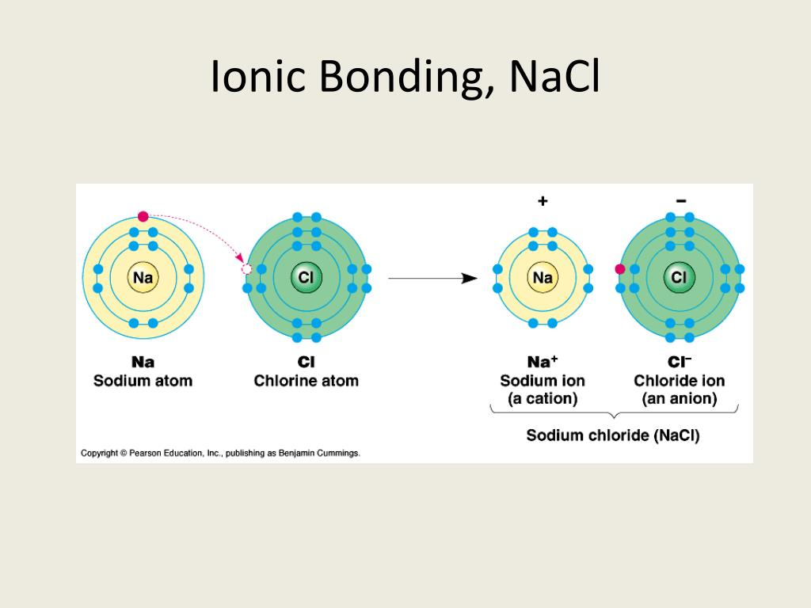
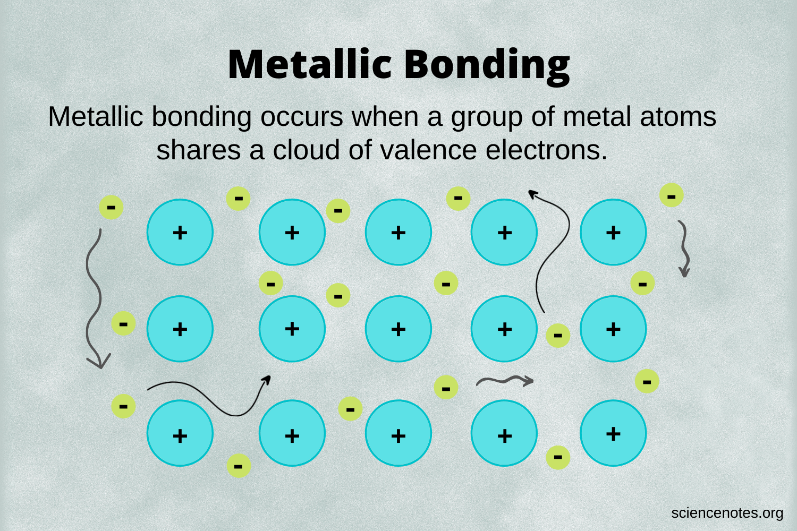
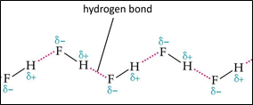

Atomic bonds dictate the physical and mechanical limits of an engineering material. Bonds are classified into strong Primary bonds (where valence electrons are present) and weak Secondary bonds (where the outer shell is completely filled).
Primary Bonds (Strong)
- Ionic Bonds: Formed via electron transfer between highly electropositive metals and highly electronegative non-metals (e.g., NaCl). The bond is created by the resulting strong electrostatic attraction between cations and anions. These materials are generally non-directional, hard, brittle, and act as electrical insulators.
- Covalent Bonds: Formed by the mutual sharing of valence electrons between electronegative elements located close to each other on the periodic table (e.g., F2, CH4, GaAs). While the intra-molecular covalent bonds are very strong, the material may have a low melting point (like Methane at -183°C) if only weak secondary bonds exist between the molecules themselves.
- Metallic Bonds: Exists in all metallic elements as an arrangement of positive ion cores floating in a "sea" of free electrons. These free-moving electrons are what grant metals their high electrical and thermal conductivity, as well as their easily deformable (ductile) mechanical nature.


Secondary Bonds (Weak)
- Van der Waal's Bonds: Present between inert gases or symmetric molecules. Occurs when an electron cloud deforms, causing the center of positive and negative charges to shift and create a temporary dipole. Weak electrostatic attraction between these dipoles creates the bond (e.g., holding together the layers of Graphite).
- Hydrogen Bonds: Formed between polar covalently bonded molecules containing Hydrogen (e.g., HF, H2O, NH3). The hydrogen proton acts as a bridge between strongly electronegative atoms.

Practice Exercises
Test your knowledge on Atomic Bonding.
1. Which primary bond is formed by the mutual sharing of valence electrons?
A) Ionic
B) Covalent
C) Metallic
2. Why are metals exceptionally good conductors of electricity and heat?
A) They form rigid, highly directional bonds
B) Their structure contains a "sea" of free electrons
C) They rely on weak Van der Waal's forces
3. What type of bond holds together the different layers of Graphite?
A) Covalent bonds
B) Hydrogen bonds
C) Van der Waal's bonds
4. Ionic bonds are most likely to form between which two types of elements?
A) Highly electropositive metals and highly electronegative non-metals
B) Two noble gases
C) Two transition metals
5. Which of the following compounds exhibits Hydrogen bonding?
A) NaCl
B) H2O
C) CH4